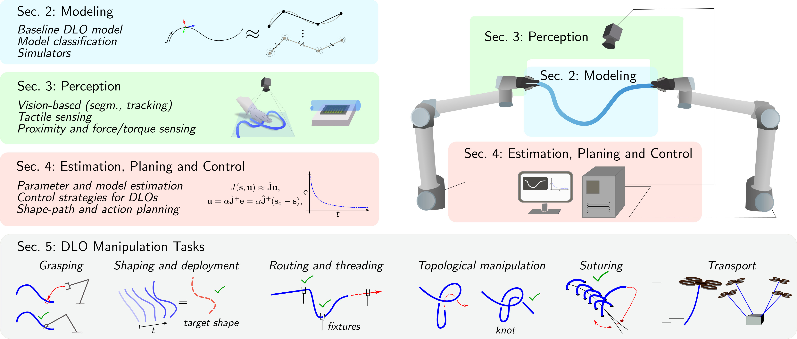

1 Introduction
Deformable Linear Objects (DLOs) are a class of elongated Deformable Objects (DOs) that include items such as cables, ropes, and tubes. The term deformable emphasizes their ability to undergo significant shape changes in response to external forces, while linear reflects their geometry, i.e. their length greatly exceeds their cross-sectional dimensions. Importantly, DLOs exhibit complex, highly non-linear behavior, making their modeling and manipulation particularly challenging. In the literature, DLOs are often classified as uniparametric DOs (Sanchez et al., 2018).
DLOs play an essential role in a wide range of practical applications across multiple domains. They are commonly encountered in domestic environments, where they appear as cables, ropes, and wires. In industrial sectors such as automotive (Trommnau et al., 2019; Jiang et al., 2011) and aerospace (Shah et al., 2018), DLOs are present not only as individual electrical cables and wires but also as complex branched structures composed of multiple interconnected elements, such as wiring harnesses and hose bundles. These are often referred to in the literature as Deformable Multi-Linear Objects (DMLOs) or Branched Deformable Linear Objects (BDLOs) (Caporali et al., 2025; Zürn et al., 2023). In the healthcare domain, DLOs also appear in the form of surgical materials such as suture threads (Lu et al., 2022). Despite their widespread presence, automating processes involving DLOs remains a significant challenge (Trommnau et al., 2019), largely due to the limited availability of effective robotic solutions for accurately perceiving and manipulating these highly flexible and deformable objects.
Throughout this survey, the term DLOs is used broadly to encompass common objects such as ropes, alongside more specialized types like DMLOs and suture threads. Specific distinctions are made only when necessary to highlight key differences relevant to the discussion.

Although interest in DLOs has been growing, the literature still lacks a dedicated and comprehensive survey addressing their unique challenges. Existing reviews primarily focus on the broader category of DOs, often emphasizing planar or volumetric DOs (Sanchez et al., 2018; Yin et al., 2021; Zhu et al., 2022; Arriola-Rios et al., 2020; Hou et al., 2019; Jiménez, 2012). Among these, only (Jiménez, 2012) and (Sanchez et al., 2018) explicitly address DLOs in detail. The former offers a limited discussion, focusing solely on model-based planning strategies. The latter presents a classification of DOs based on physical and geometric aspects, and includes DLO-specific challenges in modeling, perception, and manipulation. However, the coverage remains limited and outdated, lacking recent advancements in the rapidly evolving field of DLO research.
This review provides the reader with a well-structured overview of the current literature and state-of-the-art approaches to the modeling, perception, and manipulation of DLOs, offering valuable insights to both newcomers and experienced researchers in the field.
The literature search for this work followed the guidelines of the Preferred Reporting Items for Systematic Reviews and Meta-Analyses (PRISMA) approach (Page et al., 2021), encompassing identification, screening, eligibility, and inclusion stages. In the identification stage, a comprehensive search was conducted across electronically indexed databases, followed by manual searches of indexed conference and journal papers, as well as the bibliographies of identified articles, to ensure thorough coverage and mitigate biases from automatic-only searches. This survey included, reviewed, and classified more than 260 articles.
The remainder of this survey is structured as follows. Sec. 2 discusses modeling aspects of DLOs, followed by perception methods in Sec. 3. Challenges related to estimation, planning, and control are discussed in Sec. 4. Key manipulation tasks, including shaping, routing, and unknotting, are examined in Sec. 5. A discussion of current limitations and promising directions for future research is outlined in Sec. 6. Finally, Sec. 7 concludes the survey. An overview of the survey’s structure is illustrated in Fig. 1, providing a visual map of the main topics and their connections to help guide the reader through the subsequent sections.